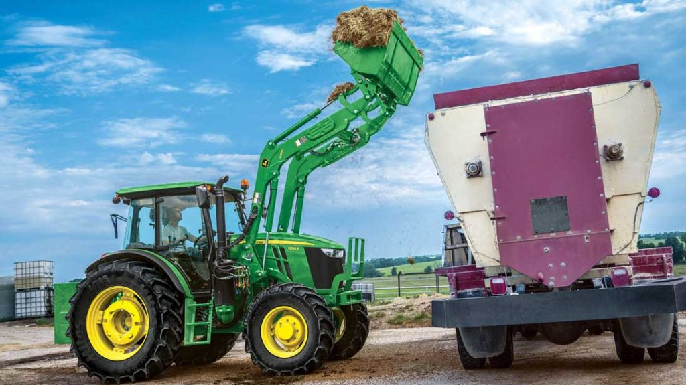
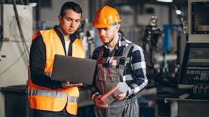
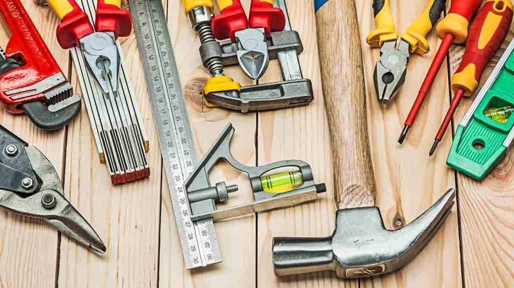

Sobre nosotros
Somos una empresa especializada en accesorios para el tractor, desde remolques hasta empacadoras, pasando por arados, palas... todo lo que necesite para su tractor.
Asesoría
Le ofrecemos servicios de asesoría personalizada para escoger los mejores accesorios para su tractor, totalmente compatibles y de primeras marcas.
Asistencia técnica
También ofrecemos servicio de instalación y asistencia técnica a precios muy competitivos.
